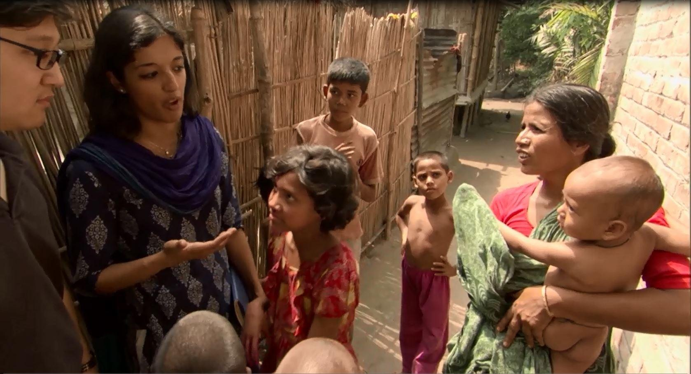

Empathy
June 8th, 2021
In my opinion, empathy is absolutely crucial in all steps and aspects of the design-thinking process. Gathering data about the situation before beginning to brainstorm, working with peers to brainstorm solutions, delegating tasks during development, and even collecting feedback from observers on your design and development process, all depend on using empathy to attempt to understand others.
I've always valued empathy the most in the initial stages of design: trying to fully understand the problem. It's easy--whether as a student working on a project, a developer working for a client, or just a person helping out--to assume that because it doesn't seem like an issue , it doesn't need to be fixed. This is rarely the case, because only if a problem existed would someone be needing help. For example, as someone who knows my way around a computer, I deal with trivial problems often, such as when a user is frustrated that their computer doesn't always log into their email automatically, only sometimes. At first, this may seem like a non-issue: just enter your username and password when it doesn't log you in. However, maybe the user has trouble remembering their password, and has to reset it almost every time. Now, it's an issue.
Once you've identified the problem, it's just as important to approach the problem from the perspective you've already established (from the user's perspective, not yours). Trying to come up with a solution from your perspective may leave the user worse-off than before. Continuing with my previous analogy, suppose I ask the user to simply create a secure vault on their computer to store all their passwords, which is encrypted with a passphrase that they set. It's perfect, right? Fixes the issue of not remembering the email password, and it keeps security tight. That's what I would do. But, now the user has to remember their new passphrase, and how to use the password manager, and how to fix the vault if it breaks. That's because I've created the solution for me, not for the user. Maybe the user doesn't need encrypted passwords. Maybe they just need a more memorable password (instead of the default one), and to be taught how to use the notes app on their phone to keep it safe. Grandma Barb doesn't need 256-bit AES encryption, she needs a pad of paper in a drawer.
As I stated before, empathy is also important during the designing process, within a team. Working together on a project (especially for an extended period of time) is an easy way to brew conflict between members, and it's important to monitor for these things so that they don't affect the final product. The easiest way to do that is to forget about oneself when working as a team. I could get angry that my draft wasn't the one picked for the next stage of design, or I could just take the best parts of my draft and apply them to be used on our final product, if we need to make it better. I could complain that another member on the team isn't doing as much work, or I could simply complete my portion of the job and just ask for help if I need it.
I don't typically take a leadership position unless it's specifically requested of me. I like having a direction, and exploring the extent of that direction and contributing my findings to my team or team leader. In my opinion, the less voices there are trying to forcefully take charge of the situation, or steer the group in a specific direction, the less chance of conflict to form. I will however, back up my positions and present my findings to the group if I do think that we need to change our development or direction.
